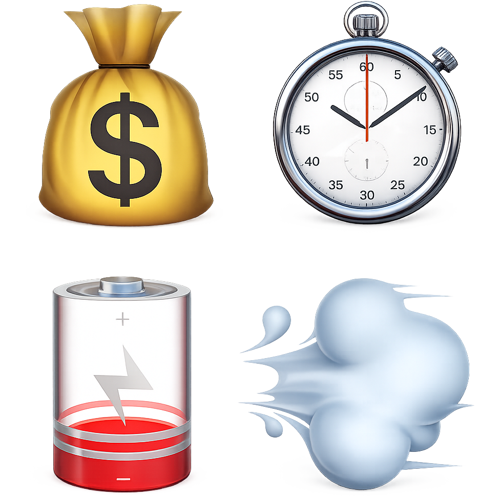

IngénierieÉnergieSouveraineté
NextEco
Rendre explicite le coût d'exécution d'un logiciel à l'intérieur même du dépôt.
Un cadre pour estimer et documenter le coût logiciel selon l'argent, le temps, l'énergie et le carbone. Conçu pour les équipes qui veulent des arbitrages honnêtes, des estimations reproductibles et une vraie responsabilité d'ingénierie.